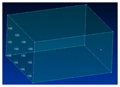
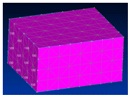
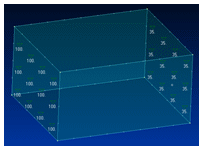
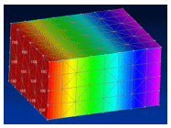
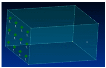
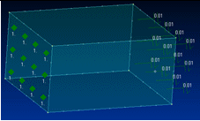
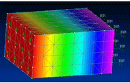

Defining thermal studies
Use the following guidelines to choose a thermal study, define thermal loads, and apply thermal connectors.
Choose a thermal study type
You can define a thermal study by selecting one of the following thermal study types in the Create Study (or Modify Study) dialog box:
-
Steady State Heat Transfer (for steady state heat transfer analysis)
-
For thermal stress analysis, which couples the results of a heat transfer analysis with a structural analysis, use one of the following study types:
-
Steady State Heat Transfer + Linear Static
Example:To learn how to define and review a thermal stress analysis on a water pipe, try the tutorial, Perform a thermal stress analysis.
-
Steady State Heat Transfer + Linear Buckling
-
-
Transient Heat Transfer (for transient heat transfer analysis)
Example:To learn how to define and review a transient heat thermal study using a brake rotor part as an example, see Define and review a transient heat transfer study.
Define thermal loads and thermal constraints
Unlike other types of studies, you use the commands in the Thermal Loads group on the ribbon to define both thermal loads and thermal constraints in thermal studies.
-
Use the Temperature command when you want to apply a fixed temperature continuously to selected entities. The model is assumed to be at thermal equilibrium. You also can use the Temperature command as a constraint to define known temperature limits of a heat source or heat sink within the thermal model.
Note:To apply a fixed temperature to the entire model, use the Body Loads group→Body Temperature command.
-
Use the following commands to specify thermal energy exchange and heat transfer:
-
Convection
-
Radiation
-
-
Use the following commands to specify heat power, heat generation, or heat transfer:
-
Heat Flux (for faces and surfaces)
-
Heat Generation (for bodies in an assembly)
Example:You can use the Heat Flux command or the Heat Generation command to study the effects of thermal energy transferred through an insulated wall in a building or in a consumer product, such as a refrigerator or freezer. To minimize heat transfer, you can determine the optimum wall thickness and the best insulating material.
Note:When you use a heat flux or heat generation load, you need to define a heat dissipation mechanism, such as a convection load or a temperature load.
For details, see Thermal loads.
-
Define thermal connectors
Thermal connectors conduct heat between faces and surfaces where there is no mechanism in the model to do so. You can use them to define thermal resistance between insulated faces and surfaces.
For assemblies and multibody parts, you can define thermal connectors using any of the following commands.
-
When defining a new thermal study, you can create thermal connectors automatically using the Connector Options section in the Create Study dialog box:

-
You also can select the Thermal connector type or Thermal Glue connector type when using the following commands in the Connectors group:
 Auto command
Auto commandManual command
Note:If you use the Auto command to define connectors for a thermal coupled study, you must select the command twice: Once to define thermal connectors for the thermal analysis, and again to define structural connectors for the linear static analysis.
Steady state thermal studies of an assembly model can be solved without defining assembly connectors. In this case, non-radiation loads do not transfer heat between bodies. This produces different results than in a similar study in which connectors are defined.
Enclosure radiation studies in an assembly model do not require assembly connectors.
Define a heat dissipation mechanism
In steady state thermal studies with a heat source, you must define a mechanism for heat dissipation. You can satisfy this requirement by:
-
Applying a thermal temperature load at opposite ends of the study geometry to achieve a temperature gradient.
-
Using a convection load on one end to dissipate a heat load applied to the other end.
Refer to the following illustrations.
|
Thermal loads applied |
Results |
|
Temperature load=100°C on the left surface.  |
The entire body is at 100°C. There is no gradient result.  |
|
Temperature load=100°C on the left surface. Temperature load=35°C on the right surface.  |
Temperature distribution across the body.  |
|
Heat Generation load=1W on the left surface.  |
Temperatures increase without boundary, because a heat source was defined but no offsetting thermal load is applied to the right surface. No solution is possible; an error message is displayed. |
|
Heat Generation load=1W on the left surface. Convection load on the right surface.  |
Temperature distribution across the body.  |
In a thermal study of a structural frames model, you cannot define thermal loads if the model contains rigid links. Rigid links are created when the frame path does not pass through the centroid of the cross section.
Materials and units in thermal studies
Thermal studies require that you define additional properties for materials in the Solid Edge Material Table. These include thermal conductivity, the thermal expansion coefficient, and specific heat. The material properties that you need to provide depend on the thermal loads that you apply.
Thermal load values and material properties use the units shown in the Derived Units table on the Units tab in the Solid Edge Options dialog box.
Thermal study options
You can use the following dialog boxes to specify options for thermal studies:
-
When you apply a radiation load, you use the Radiation Load Options dialog box to choose the type of radiation load, as well as to specify the ambient temperature, surface emissivity, number of cavities, and shading. You can open this dialog box using the Options button on the Loads command bar.
-
When you create or modify a study, you can use the Thermal Load Options dialog box to specify advanced thermal characteristics for free convection and enclosure radiation. You can open this dialog box by selecting the Thermal Load Options button on the Create Study (or Modify Study) dialog box.
-
When you create a study and select the Transient Heat Transfer study type, the Transient Heat Options dialog box is displayed for you to define the duration, time increments, and initial temperature of the transient heat transfer analysis.
How do I
Verify simulation material propertiesCreate a study
Create a study using a simplified model
Define a coupled study for thermal stress analysis
Assign units in studies
Define and review a transient heat study
Define a harmonic frequency response study
Learn more
Creating and using studiesUsing materials in studies
Modifying studies
Structural studies
Thermal studies
Using steady state heat transfer studies
Coupled studies
Harmonic response studies
Create and solve a study using GD optimized model
Create and solve a study using an STL model
Look up more details
Create Study (or Modify Study) dialog boxTransient Heat Options dialog box
Options: Harmonic Frequency Analysis dialog box